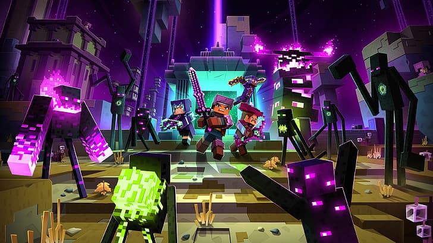

Crafting the Perfect Minecraft Server Experience
Creating a Minecraft server that stands out in the crowded gaming world requires more than just the basics. To craft the perfect Minecraft server experience, you need a blend of creativity, technical know-how, and player-centric features. In this article, we'll delve into the essential elements that make up the ideal Minecraft server.
1. Server Hardware and Hosting
Before anything else, ensure your server is hosted on reliable hardware with sufficient resources. Lag-free gameplay starts with the right server infrastructure. Invest in quality hosting to provide your players with a seamless experience.
2. Version Compatibility
Minecraft regularly releases updates and snapshots. Ensure your server is compatible with the latest version while still supporting players on older versions. This flexibility ensures a broader player base.
3. Plugins and Mods
Select plugins and mods that enhance gameplay without overwhelming it. Plugins for economy, land protection, and anti-griefing measures are essential. Mods can add exciting content and new gameplay mechanics.
4. Unique Spawn Area
Your server's spawn area is the first thing players see. Make it memorable. Design a unique, welcoming, and informative spawn point. Include portals to various server locations and rules boards.
5. Engaging Gameplay
Create custom events, challenges, or quests to keep players engaged. Incorporate player feedback and suggestions to evolve your server's gameplay over time. Dynamic and evolving gameplay keeps players coming back.
6. Community and Social Features
Foster a sense of community. Implement forums, Discord servers, or in-game chat channels. Regularly host community events, contests, and giveaways. A strong community keeps players connected and invested.
7. Regular Backups and Security
Ensure regular server backups to protect against data loss. Implement security measures to prevent griefing and cheating. Players need to feel their progress is secure.
8. Balanced Economy
If your server uses an economy system, balance it carefully. Avoid inflation or extreme scarcity of resources. An economy that encourages trade and cooperation enhances the player experience.
9. Quality Staff Team
A responsive and professional staff team can make or break a server. Select moderators and administrators who are knowledgeable about the game and capable of handling player issues effectively.
10. Player Feedback
Always listen to your players. Act on their feedback and suggestions. An evolving server that responds to player needs remains relevant and appealing.
Crafting the perfect Minecraft server experience requires dedication and ongoing effort. Keep refining your server based on player feedback and trends in the Minecraft community. With the right combination of features and a passionate player base, your Minecraft server can become a thriving virtual world that keeps players coming back for more.
Download FlameCord Back to the top